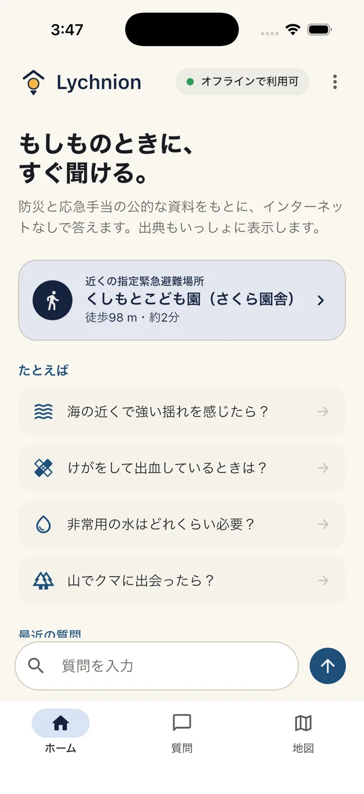

Lychnion
リクニオン
ネットが止まっても、
手のひらに小さな灯り。
公式のガイドをもとに質問に答え、避難所や安全な場所をオフラインの地図で示すアプリです。電波がなくても動きます。
開発中です。App Store と Google Play ではまだ公開していません。

できること
スマホの中だけで動きます。ネットにつながっていなくても使えます。
圏外でも、質問に答える
公式のガイドをもとに答え、出典もいっしょに表示します。ガイドにないことは推測で答えません。
オフラインの地図
避難所や安全な場所を、ネットなしで地図に表示します。地図は前もってスマホに保存しておきます。
避難所で、みんなのスマホに
避難所に置いたパソコン1台が、Wi‑Fi を通して近くのスマホの質問に答えます。
行き先に合わせたパッケージ
防災だけのアプリではありません。ネットが届かないかもしれない場所に合わせて、ガイドと地図のパッケージを入れて使います。
- 防災 地震や津波のとき。避難所と、公的な防災ガイド。
- 登山 山の中の圏外で。道と山小屋、山での安全。
- バックカントリースキー 雪山で。雪崩への備えと、帰り道。
- セーリング 海の上で。港と、海での安全。 検討中
λυχνίον
「Lychnion（リクニオン）」は、ギリシャ語で「小さな灯り」という意味です。暗い中でも、今いる場所と行く先を照らす灯りになることを目指しています。